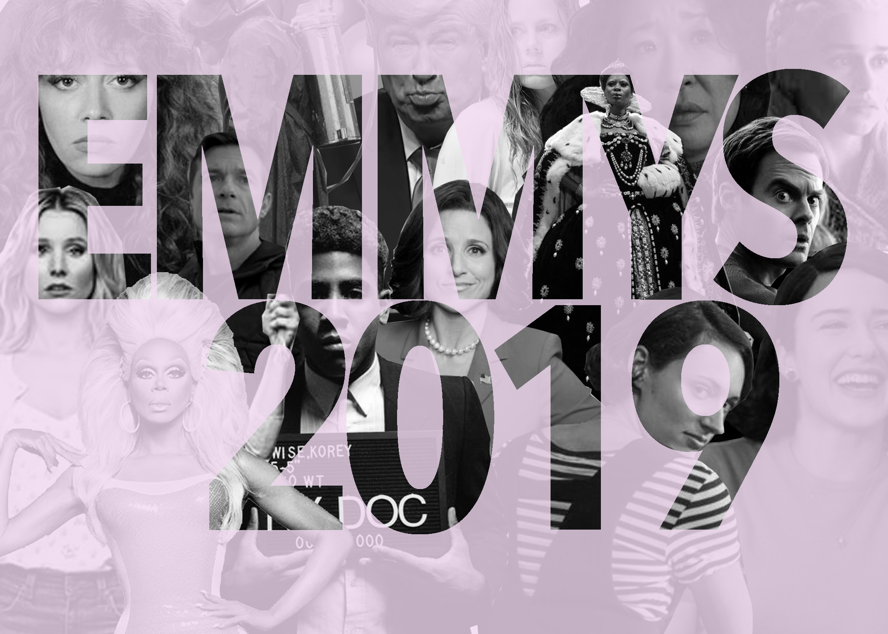

Can Marvelous Mrs. Margaritas and Russian Mule Dolls save the rating starved Emmys? Last year’s Emmy’s had the lowest audience in history with only 10.7 million viewers. The organizers are hoping to make it the best year yet, by cutting the host and opening number. Bars around New York will air the awards... with alcohol specials, guessing ballots and drinking games. Caitlin Gillette, Production manager at Parklife Bar, is hosting the venues third Emmy Party. She thinks the high quality of nominated shows will boost ratings.
"with Game of Thrones and with some of the other shows that people feel passionate about, I think viewership will be a little higher"
This year, Game of Thrones sets the record for most nominations earning 32 for its final season. The broadcast kicks off tonight at 8pm.
For New York City News Service, I’m Daisy Williams.